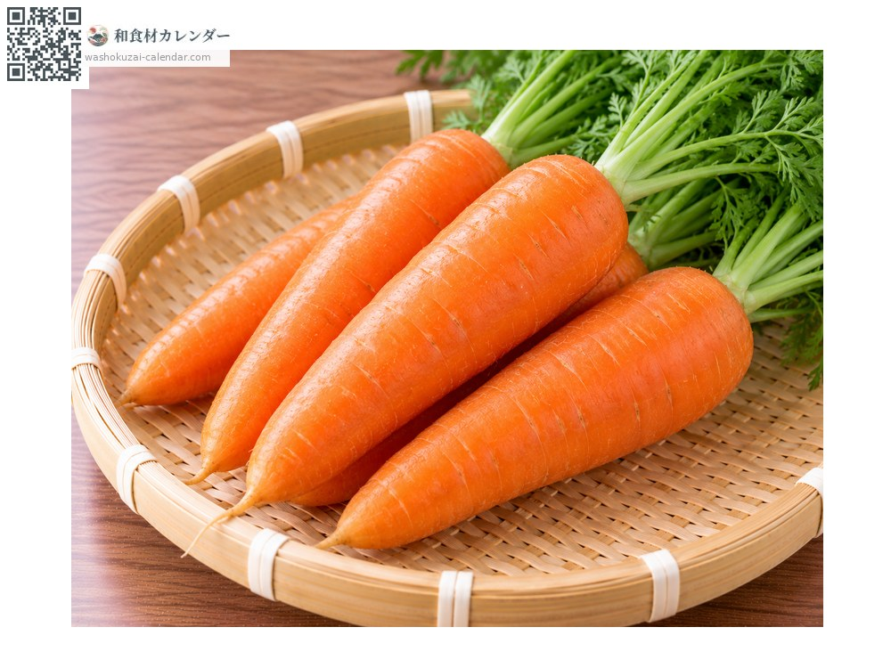
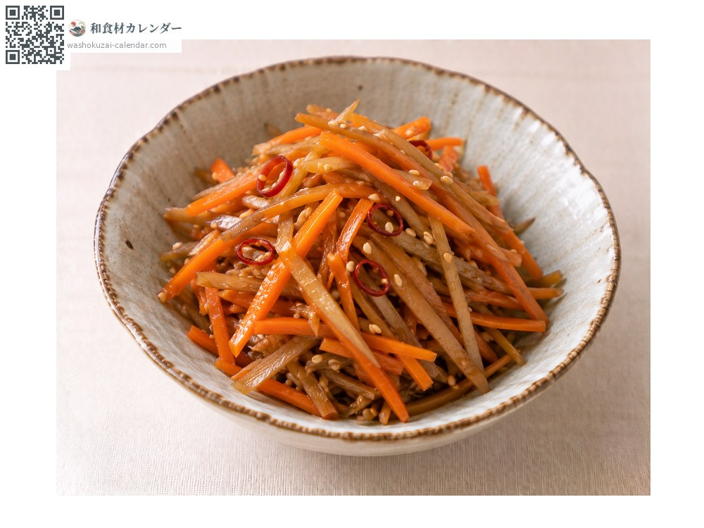
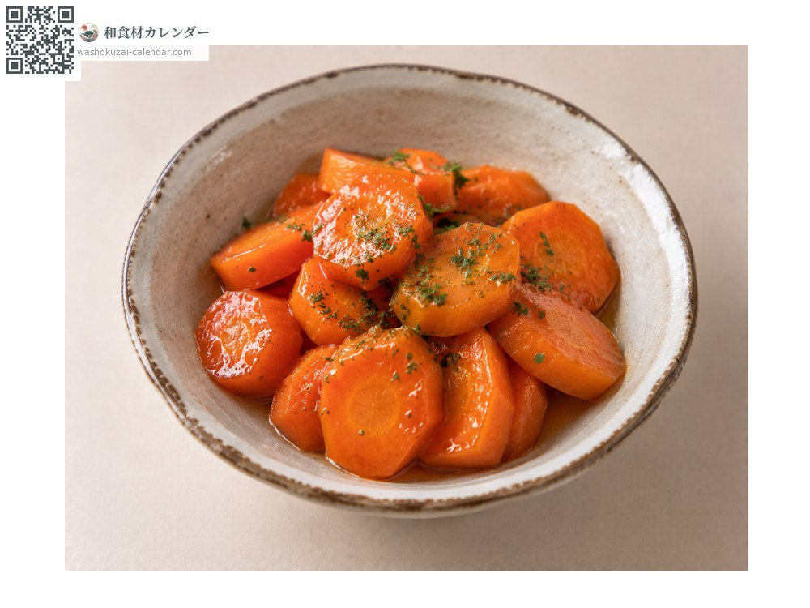
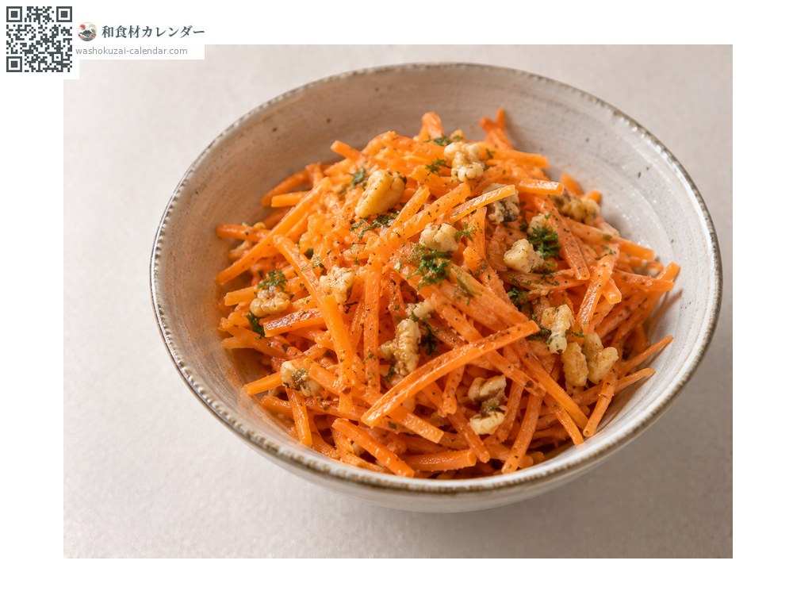
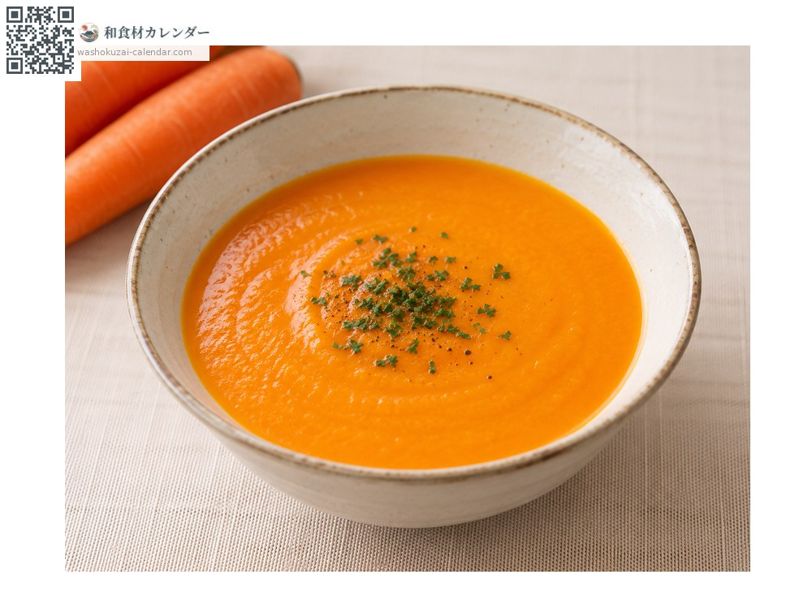

蔬菜
胡萝卜
ニンジン にんじん ninjin
别名ninjin
应季时期为10月、11月、12月

应季时期
1月
2月
3月
4月
5月
6月
7月
8月
9月
10月
11月
12月
应季有供应
烹饪方法

金平（切丝甜咸拌炒）
切丝热炒。

黄油糖渍胡萝卜
以黄油与砂糖炖煮。

沙拉
切成细丝。

浓汤
过筛打成泥。
挑选方法
颜色深且有光泽、表面平滑。芯越细代表越柔软。
保存方法
擦干水分用报纸包好，直立冷藏。不耐潮湿。
主要产地
小知识
β胡萝卜素多集中在接近外皮处。与油一起摄取吸收会更好。